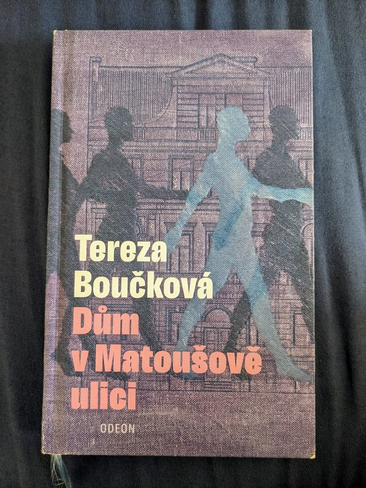

Po dlouhé době tu dnes mám zase jednu literární recenzi. Poslední dobou stíhám akorát tak číst, ale se zaznamenáváním svých postřehů už je to horší. Dům v Matoušově ulici však rozhodně za zaznamenání stojí - ostatně jako zatím každá z knih, kterou jsem od autorky Terezy Boučkové, jejíž jméno se tu na blogu rozhodně neobjevuje poprvé, četla. Její literární styl je mi velmi blízký, její texty jsou autentické, nevyumělkované, přesto mne do děje vždy dokáže dokonale vtáhnout.
Kniha mne zaujala už jen svým neotřelým tématem - autorka vypráví příběh domu, v němž v Praze prožila své dětství a posléze vlastně i část svého dospělého života. Spíš než o historii domu jako takového je však Dům v Matoušově ulici vyprávěním o osudech jeho obyvatel - a že je skutečně co vypravovat! Pod jeho střechou se odvíjí pohnuté dějiny druhé světové války, která bolestně zasáhne do životů jeho původních majitelů, židovské rodiny Schwarzů. Jejich životním osudům je věnována převážná část knihy, jsou to však mnohdy tak neuvěřitelné a fascinující příběhy, že autorce bez váhání odpustíte, že není o trochu víc prostoru věnováno i dalším zajímavým jménům, jejichž životy byly s domem v Matoušově ulici také více či méně významným způsobem provázány, ať už se jedná o režiséra Miloše Formana, novináře Hugo Vavrečku, herečku Zitu Kabátovou i autorčiny rodiče - Annu a Pavla Kohoutovy či prezidenta Václava Havla v dobách, kdy ještě nebyl prezidentem :-).
Všimla jsem si, že Tereze Boučkové mnozí vyčítají jakousi roztříštěnost příběhu, do něhož se prolínají různé střípky z aktuálního společenského dění doma i ve světě. Na stránkách knihy tak objevíte zmínky o válce na Ukrajině, střelbě na filosofické fakultě či izraelsko-palestinském konfliktu. Asi souhlasím s tím, že tyto “prostřihy” do současnosti děj malinko narušovaly, ale Tereza Boučková tímto upřímným a autentickým stylem prostě píše. Stejně tak její pátrání po osudech obyvatelů domu v Matoušově ulici může čtenář sledovat prakticky “v přímém přenosu” - kniha mapuje nejen samotné lidské příběhy, ale i cestu, která autorku k získání informací vedla.

Jediné, co mi bylo upřímně líto, je fakt, že kniha není rozsáhlejší. Myslím, že spousta osudů spjatých s domem by si zasloužila více prostoru. Na druhou stranu je asi v pořádku nechat některé věci nevyřčené, obzvlášť když se jedná o reálné lidské příběhy vyprávěné mnohdy s odstupem pouze několika málo desítek let. Přesto jsem se po dočtení poslední kapitoly neubránila lehkému zklamání, že potenciál tématu mohl být naplněn ještě lépe.
I přes tyto pocity má ale Tereza Boučková nadále mé sympatie a stejně jako u kterékoliv její předchozí knihy, ani s touto rozhodně neuděláte chybu.